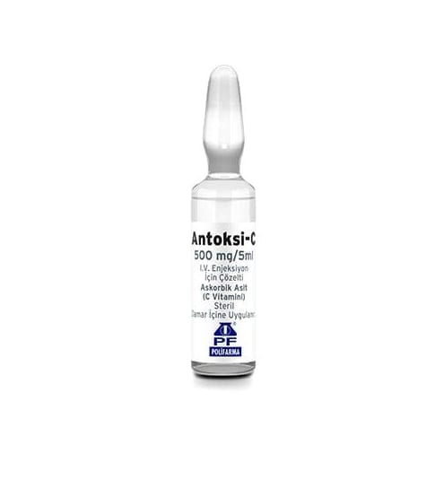

Antoksi-C 500 mg/5 ml I.V. Enjeksiyon İçin Çözelti, 5 Adet

Ne için kullanılır
KT · Bölüm 1Her ampul etkin madde olarak 500 mg C vitamini içerir. ANTOKSİ-C, şeffaf cam ampuller içerisinde berrak, renksiz veya sarımsı çözelti yer alır. - Ciddi C vitamini (askorbik asit) eksikliğinde, - Ağız yoluyla kullanımın yetersiz olduğu, mümkün olmadığı veya kullanılmaması gerektiği durumlarda C vitamini eksikliğinin giderilmesi veya önlenmesinde kullanılır.